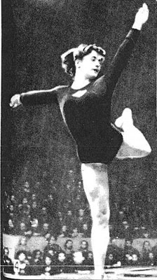

Lidia Ivanova (USSR)
1958 V Silver Medalist

Medal Total
Olympic Games: 2
Gold
World Championships: 2 Gold, 1 Silver
Lidia was born on January 27, 1937, in Moscow. She began gymnastics in the 4th grade and initially was coached by Boris Dankevich. She attained the Master of Sport rank at age 18, after becoming the champion of Moscow. In 1955, Lidia was invited to train at Dynamo sport club with Aleksei Aleksandrov; she also joined the national team that same year. She married 1956 Olympic soccer champion Valentin Ivanov, and the couple had two children (son Valentin was born in 1961 and daughter Olga was born in 1964) Lidia retired in 1964 due to an elbow injury. She has worked as a coach and a judge since then, and has judged at six Olympics. She also does commentary for Russian television.
Competition Results
1956
Olympic Games: 1st Team, 21st AA
USSR Championships: 2nd Team, 5th B, 6th UB
1957
USSR Championships: 1st Team, 5th AA
1958
USSR Championships: 2nd Team, 1st AA
World Championships: 1st Team, 6th AA, 2nd V, 6th UB,
6th B, 6th FX
1959
USSR Championships: 1st Team, 3rd AA, 2nd FX
USSR Cup: 4th AA, 2nd FX, 4th UB, 6th V
1960
Olympic Games: 1st Team, 7th AA
1961
USSR Cup: 4th UB, 6th FX
1962
USSR Championships: 1st Team, 4th AA
World Championships: 1st Team, 13th AA
1963
USSR Championships: 1st Team, 6th AA, 5th V
This page was created on November
20, 2005 and was last updated on October 9, 2026.
© Gymn Forum